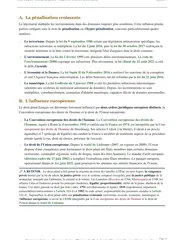

L'arrêt du 15 décembre 2004 sur la complicité de complicité, expliqué simplement
Le 15 décembre 2004, la chambre criminelle de la Cour de cassation juge que la personne qui aide en connaissance de cause l'auteur d'une escroquerie, même par l'intermédiaire d'un autre complice, est elle-même complice au sens de l'article 121-7 du Code pénal. La complicité de complicité est donc punissable. Dans cette affaire, un prête-nom recrute d'autres prête-noms pour encaisser des chèques d'assurance obtenus par de faux sinistres.
Un prête-nom est une personne qui prête son nom, ici son compte bancaire, à une opération dont elle n'est pas la vraie bénéficiaire. Si ton énoncé montre une personne qui aide quelqu'un qui aide lui-même l'auteur, sans connaître l'auteur, cet arrêt te donne la solution.

La solution de l'arrêt en bref
L'arrêt a été rendu le 15 décembre 2004 par la chambre criminelle de la Cour de cassation, sous le numéro de pourvoi 04-81.684, et il est publié au Bulletin criminel sous le numéro 322. La Cour y rejette le recours, appelé pourvoi, d'un homme condamné pour complicité d'escroquerie.
En effet, l'article 121-7 du Code pénal punit celui qui facilite sciemment, par aide ou assistance, la préparation ou la consommation d'une infraction. Sciemment signifie en sachant ce qu'on fait, et la consommation désigne la réalisation complète de l'infraction. Pour la Cour, cette aide reste donc punissable, à condition d'être apportée en connaissance de cause, même quand elle passe par un autre complice. Les juristes qui commentent les arrêts parlent de complicité de complicité, de complicité indirecte ou de complicité au second degré.
Cette solution met fin à un débat ancien, car la chambre criminelle jugeait auparavant que la complicité de complicité n'est pas punissable. L'arrêt de 2004 abandonne cette solution pour l'aide apportée à un complice.
Le complice indirect est puni comme l'auteur, à condition de savoir qu'il aide à commettre l'infraction et qu'une infraction principale punissable existe. Il n'a pas besoin de connaître l'auteur.
Un employé d'une compagnie d'assurance fait émettre des chèques pour des sinistres imaginaires. Un recruteur trouve des prête-noms pour les encaisser, et la personne poursuivie, appelée ici le prévenu, en fait partie. Il recrute à son tour d'autres prête-noms.
La cour d'appel de Paris condamne le prévenu à six mois d'emprisonnement avec sursis et mise à l'épreuve pour complicité d'escroquerie.
La chambre criminelle rejette le pourvoi. L'aide apportée à l'auteur par l'intermédiaire d'un autre complice constitue une complicité.

Fiche complète
Droit pénal général L1 S2
Les faits, une escroquerie à l'assurance montée en chaîne
L'affaire concerne une compagnie d'assurance, La Camat, dont un employé organise la fraude. L'arrêt désigne les personnes par des initiales. Pour monter la fraude, cet employé choisit des dossiers dont le contrat d'assurance a été résilié récemment et il y rattache des déclarations de sinistres imaginaires. Chaque fausse déclaration entraîne ainsi l'émission d'un chèque tiré sur la compagnie. Les faits précèdent l'arrêt d'appel de février 2004, mais la décision ne les date pas plus précisément.
Un recruteur, complice de l'employé, doit trouver des prête-noms. Chaque prête-nom porte un chèque au crédit de son compte, puis il restitue le montant en espèces au recruteur, qui le remet à l'employé. En échange, les prête-noms reçoivent une rétribution.
Le prévenu est l'un de ces prête-noms. Il est sans emploi depuis deux ans et il touche le revenu minimum d'insertion, une allocation versée aux personnes sans ressources. Après avoir été démarché par le recruteur, il encaisse lui-même un chèque sur son compte. Il recrute alors d'autres personnes prêtes à faire de même. Selon ses propres déclarations, il en contacte une dizaine, qui préviennent elles-mêmes des amis, ce qui représente vingt ou vingt-cinq personnes au total. Parmi elles, l'une, policier municipal, reconnaît avoir recruté une dizaine de personnes pour le compte du prévenu. Elle lui remet à chaque fois les espèces et le bordereau d'accompagnement, un document signé par les prête-noms. Le prévenu rassemble ensuite l'argent et le donne au recruteur. En revanche, il ne connaît pas l'employé.
Le prévenu admet avoir reçu de l'argent. Devant les enquêteurs, il parle de 10 000 francs au total. Devant le juge d'instruction, il évoque quatre fois 500 francs remis par le recruteur lorsqu'il lui apportait les espèces collectées. Il soutient pourtant qu'il ignorait la fraude. Selon lui, le recruteur lui avait expliqué que la compagnie avait besoin d'un prête-nom pour clôturer des dossiers et lui remettre un reliquat, c'est-à-dire une somme restant due. Devant la cour, il ajoute qu'il ne pensait pas que l'opération irait aussi loin. Le recruteur, en revanche, le contredit et affirme que le prévenu connaissait le système.
L'employé, lui, a dépensé l'ensemble des sommes qui lui sont parvenues par le recruteur et par le prévenu. Les poursuites visent l'escroquerie commise au préjudice de la compagnie, que l'article 313-1 du Code pénal définit comme le fait de tromper une personne, notamment par des manœuvres frauduleuses, c'est-à-dire par des mises en scène ou des documents destinés à la tromper, pour l'amener à remettre des fonds. Le prévenu est poursuivi pour complicité de cette escroquerie.
La procédure, de la cour d'appel de Paris à la chambre criminelle
Selon un commentaire publié sur Doc du juriste, le tribunal avait déjà condamné l'employé comme auteur de l'escroquerie et le recruteur pour complicité. Le prévenu fait ensuite l'objet d'un arrêt de la cour d'appel de Paris, qui confirme un jugement de première instance et statue le 23 février 2004. La cour d'appel déclare le prévenu coupable de complicité d'escroquerie et le condamne à six mois d'emprisonnement avec sursis et mise à l'épreuve. Le sursis signifie que cette peine ne s'exécute pas tant qu'il respecte certaines obligations pendant un délai fixé. Ces obligations forment la mise à l'épreuve. La cour d'appel ordonne en outre une mesure de confiscation, qui retire au condamné la propriété de certains biens, et statue sur les intérêts civils, c'est-à-dire sur la réparation due à la victime.
Pour le déclarer complice, la cour d'appel retient qu'il a prêté son concours à l'employé en lui servant de prête-nom et en recrutant d'autres personnes aux mêmes fins. Elle juge invraisemblables ses explications sur son ignorance, car la relation entre un assureur et un assuré repose sur un contrat, et un reliquat de prime ou un remboursement de sinistre ne revient qu'au titulaire du contrat ou à une victime. Le prévenu possédait lui-même un véhicule, ce qui, pour la cour d'appel, lui interdisait d'ignorer cette règle.
Le prévenu forme alors un pourvoi devant la Cour de cassation. Cette juridiction vérifie seulement si les juges ont appliqué correctement la loi, et elle accepte les faits tels que les juges du fond, qui ont examiné l'affaire et ses preuves, les ont constatés.
Les arguments, un complice du complice est-il complice ?
Le prévenu présente un moyen unique, c'est-à-dire un seul argument de droit au soutien de son pourvoi, qui comporte deux branches. Il invoque la violation de l'article 121-7 du Code pénal et de l'article 132-24 du même code, ainsi que celle de l'article 593 du Code de procédure pénale et de l'article 6 de la Convention européenne des droits de l'homme.
La première branche contient l'argument principal. En effet, le prévenu y affirme que la complicité de complicité n'est pas punissable. Il rappelle ensuite ce que la cour d'appel a constaté, à savoir qu'il ne connaissait pas l'employé, que le recruteur, lui-même complice de l'employé, l'avait démarché et qu'il remettait des fonds à ce recruteur. Son argument revient à dire que ces constatations montrent une aide apportée uniquement au complice de l'auteur, sans aucun lien avec l'auteur. La cour d'appel n'aurait donc pas tiré les conséquences légales de ses propres constatations, et elle aurait violé l'article 121-7.
La seconde branche porte sur la peine. Le texte publié ne reproduit que la réponse de la Cour, qui montre que cette branche reproche l'absence de motivation du choix de la peine, c'est-à-dire l'absence d'explication de ce choix par les juges. Elle s'appuie sans doute sur l'article 132-24 du Code pénal et sur l'article 593 du Code de procédure pénale, qui impose aux juges de motiver leurs décisions.
Le problème de droit
La personne qui aide en connaissance de cause le complice de l'auteur d'une escroquerie, sans jamais avoir été en contact avec l'auteur, est-elle elle-même complice de cette escroquerie au sens de l'article 121-7 du Code pénal ?
La solution de la Cour de cassation
La chambre criminelle rejette le pourvoi. Elle répond d'abord à la première branche, celle de la complicité de complicité, par un attendu, c'est-à-dire un paragraphe de la décision qui commence par « Attendu que ».
L'attendu sur la complicité indirecte
« Attendu qu'en prononçant ainsi, et dès lors que l'aide ou l'assistance apportée en connaissance de cause à l'auteur de l'escroquerie, même par l'intermédiaire d'un autre complice, constitue la complicité incriminée par l'article 121-7 du Code pénal, la cour d'appel a justifié sa décision »Cass. crim., 15 décembre 2004, n° 04-81.684, Bull. crim. n° 322
Le prévenu a aidé l'employé en lui servant de prête-nom, et cette aide est passée par le recruteur. La Cour juge cette aide suffisante, sans chercher de lien direct entre le prévenu et l'employé.
L'attendu sur le choix de la sanction
« hormis le cas où ils prononcent une peine d'emprisonnement sans sursis, les juges ne sont pas tenus de motiver spécialement le choix de la sanction qu'ils appliquent dans les limites fixées par la loi »Cass. crim., 15 décembre 2004, n° 04-81.684, Bull. crim. n° 322
La peine prononcée contre le prévenu était assortie d'un sursis, si bien que cette obligation spéciale de motivation ne s'appliquait pas. La seconde branche est écartée, et la Cour ajoute que l'arrêt respecte les règles de forme.
Le sens du raisonnement
D'abord, l'article 121-6 du Code pénal punit le complice comme s'il était l'auteur. Ensuite, l'article 121-7 donne la définition. Selon son premier alinéa, c'est-à-dire son premier paragraphe, la personne qui, sciemment, par aide ou assistance, a facilité la préparation ou la consommation d'un crime ou d'un délit est complice. Son second alinéa vise en outre celui qui provoque l'infraction par un don, une promesse, une menace, un ordre ou un abus d'autorité ou de pouvoir, ou qui donne des instructions pour la commettre.
Le texte vise l'aide apportée sciemment, qui facilite l'infraction, sans préciser à qui elle est remise. Le chemin que suit l'aide importe donc peu, dès lors qu'elle facilite l'infraction et qu'elle est apportée en connaissance de cause.
Par exemple, un homme prête sa camionnette à un ami, en sachant que cet ami va la remettre à l'auteur d'un cambriolage pour emporter le butin. Il aide l'auteur par l'intermédiaire de son ami, et il est complice du cambriolage. En revanche, s'il prête la camionnette sans savoir à quoi elle servira, la connaissance de cause manque et la complicité n'existe pas, même si le véhicule sert ensuite à cambrioler.
Dans l'affaire jugée, la chaîne compte trois personnes. L'employé commet l'escroquerie, et le recruteur l'aide en lui apportant les prête-noms et les espèces. Ensuite, le prévenu aide à son tour le recruteur, en lui servant de prête-nom et en recrutant d'autres personnes. Cette aide facilite l'escroquerie de l'employé, même si elle passe par le recruteur, car elle contribue à faire encaisser les chèques.
La complicité reste en outre attachée à une infraction principale punissable. L'escroquerie de l'employé existe, donc la chaîne a un point de départ. Cette exigence découle de l'emprunt de criminalité. Le complice n'est punissable que parce que l'auteur a commis une infraction, et sans cette infraction il n'y a rien à lui reprocher. Le complice peut être poursuivi même quand l'auteur ne peut pas l'être, par exemple parce qu'il est décédé. L'aide ou l'assistance ne se punit que pour un crime ou un délit, car le premier alinéa de l'article 121-7 ne vise que ceux-là. Cette logique est celle de l'arrêt Lacour, où le commanditaire d'un meurtre échappait à toute peine parce que l'exécutant n'avait commis aucune infraction.
Sur la peine, le complice indirect risque la peine de l'auteur, selon l'article 121-6. L'escroquerie est punie de cinq ans d'emprisonnement et de 375 000 euros d'amende par l'article 313-1. Le prévenu, lui, a reçu six mois avec sursis, alors que le maximum est de cinq ans.
Enfin, le complice indirect peut ignorer qui est l'auteur. Le prévenu ne connaissait pas l'employé et il est pourtant condamné. La cour d'appel déduit en effet de l'invraisemblance de ses explications qu'il savait aider à commettre une fraude.
Un partiel de droit pénal en vue ?
Mon guide gratuit « Réviser le droit sans s'épuiser » explique en sept parties comment je fais retenir les arrêts à mes élèves. Je te l'envoie dès que tu indiques ton adresse.
L'arrêt du 15 décembre 2004 est-il toujours d'actualité ?
Oui. L'article 121-7 n'a pas changé depuis l'entrée en vigueur du Code pénal en 1994, et les cours de droit pénal général citent toujours l'arrêt de 2004 pour punir le complice d'un complice.
Avant 2004, la chambre criminelle affirmait que la complicité au second degré n'est pas punissable, et elle l'avait encore dit en 1987. Des juristes défendaient cette position, dont Garçon selon un commentaire de Doc du juriste, parce que le lien entre l'auteur et le complice du complice paraissait trop éloigné pour justifier une poursuite.
La Cour avait pourtant déjà admis une forme de participation indirecte. Le 30 mai 1989, à propos d'un commanditaire qui transmettait ses ordres à des exécutants par un intermédiaire, elle avait jugé que l'article 60 de l'ancien Code pénal punit le commanditaire même si ses instructions passent par un intermédiaire. Cette décision concernait la complicité par instructions. L'arrêt de 2004 va plus loin, puisque l'aide passe ici par un complice et arrive jusqu'à l'auteur par ce détour.
Neuf mois avant l'arrêt, la loi du 9 mars 2004 a créé le délit de mandat criminel, à l'article 221-5-1 du Code pénal, qui réprime la commande d'un assassinat ou d'un empoisonnement même quand ce crime n'a été ni commis ni tenté. Avant ce texte, la commande d'un assassinat non exécuté restait impunie, comme le montre l'arrêt Lacour.
L'escroquerie à l'assurance fait l'objet d'un autre arrêt de la même chambre. Selon l'arrêt du 17 décembre 2008, la tentative d'escroquerie à l'assurance devient punissable au moment où l'assuré déclare un sinistre à son assureur. Le chapitre 13 de la fiche de droit pénal général L1 S2 explique la complicité, avec ses conditions et sa peine.
La critique de la solution
Les juristes favorables à la solution considèrent que celui qui s'associe en connaissance de cause à une infraction y participe, même de façon indirecte. Ainsi, le Dictionnaire de droit criminel reproduit un passage du Traité de droit criminel de Merle et Vitu, qui donne l'exemple d'un voleur qui demande à un complice de se renseigner auprès d'un domestique. Le domestique, mis au courant du projet, fournit le plan de la maison à cambrioler. Merle et Vitu estiment que ce domestique doit être puni, car il s'est associé à l'acte principal en connaissance du projet, même indirectement.
La position inverse peut s'appuyer sur l'interprétation stricte de la loi pénale, selon laquelle le juge applique le texte tel qu'il est écrit, sans l'étendre à des cas qu'il ne cite pas. Selon elle, l'article 121-7 définit le complice par son aide à l'infraction de l'auteur. Mais le texte ne prévoit pas de punir un complice aussi éloigné de l'auteur, et l'étendre reviendrait à créer une infraction. L'arrêt de 2004 se lit comme une réponse à cette objection, puisque l'article vise l'aide qui facilite l'infraction, quel que soit son chemin.
Une critique plus pratique porte sur les limites de la solution. Dans l'affaire, il n'y a en effet qu'un seul intermédiaire entre le prévenu et l'auteur. Selon un commentaire publié sur Doc du juriste, la formule de la Cour permet de punir un complice situé encore plus loin de l'auteur. L'arrêt ne dit donc pas jusqu'où la chaîne peut aller. La connaissance de cause et l'infraction principale punissable sont les seules limites qu'il mentionne.
La connaissance de cause est enfin difficile à prouver dans ce type de dossier. La cour d'appel a en effet déduit cette connaissance de l'invraisemblance des explications du prévenu. Cette déduction relève de l'appréciation des juges qui examinent les faits, et l'arrêt du 15 décembre 2004 ne détaille pas les indices exigés.
Le même commentaire relève aussi que l'arrêt ne dit pas si le complice indirect doit connaître l'infraction précise à laquelle il participe ou seulement avoir conscience de participer à une infraction quelconque. Dans l'affaire, la cour d'appel a retenu que le prévenu ne pouvait pas ignorer le caractère frauduleux du système.
Comment utiliser l'arrêt du 15 décembre 2004 dans une copie
Dans un cas pratique. Tu cites l'arrêt quand l'énoncé montre une aide qui passe par un intermédiaire, par exemple un réseau de prête-noms ou un service rendu à une personne qui travaille pour l'auteur. Il faut d'abord vérifier qu'une infraction principale punissable existe. L'aide du premier complice se qualifie ensuite, puis celle du second, en cherchant dans les faits les indices qui montrent que ce second complice savait aider à commettre l'infraction. La conclusion reprend la formule de la Cour, et l'article 121-6 donne la peine.
Dans une dissertation sur la complicité. L'arrêt illustre l'extension de la répression au-delà du complice direct, car l'aide y atteint l'auteur par un détour. Tu peux ainsi l'opposer à l'arrêt Lacour, où l'absence d'infraction principale empêche toute complicité. La méthode complète est détaillée dans ma page sur la fiche d'arrêt et dans celle sur le raisonnement juridique étape par étape.
Les erreurs à éviter avec l'arrêt du 15 décembre 2004
- Croire que la complicité de complicité reste impunie. Cette solution date d'avant 2004. Depuis l'arrêt du 15 décembre 2004, l'aide apportée à l'auteur par l'intermédiaire d'un autre complice est punissable.
- Exiger de connaître l'auteur. Le prévenu ne connaissait pas l'employé, et sa condamnation est confirmée. Le lien avec l'infraction résulte de l'aide apportée.
- Oublier la connaissance de cause. L'arrêt vise une aide apportée en connaissance de cause. Celui qui prête un compte bancaire sans savoir à quoi il va servir n'est pas complice, et la copie doit relever les indices qui montrent que la personne savait.
- Appliquer l'arrêt sans infraction principale punissable. La complicité d'un complice suppose que l'auteur ait commis ou tenté une infraction punissable. Sans cette infraction, on retrouve la solution de l'arrêt Lacour.
Questions fréquentes
Que dit l'arrêt du 15 décembre 2004 en une phrase ?
Quelle est la référence complète de l'arrêt du 15 décembre 2004 ?
Comment citer l'arrêt du 15 décembre 2004 dans un cas pratique ?
La complicité de complicité est-elle punissable aujourd'hui ?
Faut-il connaître l'auteur de l'infraction pour être complice indirect ?
Quelle différence entre cet arrêt et l'arrêt Lacour ?

La fiche de droit pénal général L1 S2 réunit les règles et les arrêts de la complicité.
Le chapitre 13 de ma fiche de droit pénal général L1 S2 explique d'abord comment l'infraction principale entre en jeu. Il montre ensuite à quoi correspond l'aide apportée en connaissance de cause, puis la peine du complice, avec les arrêts qui les appliquent. Chaque condition y est présentée de façon à pouvoir être vérifiée sur les faits d'un énoncé de cas pratique.
Voir la fiche de droit pénal général L1 S2